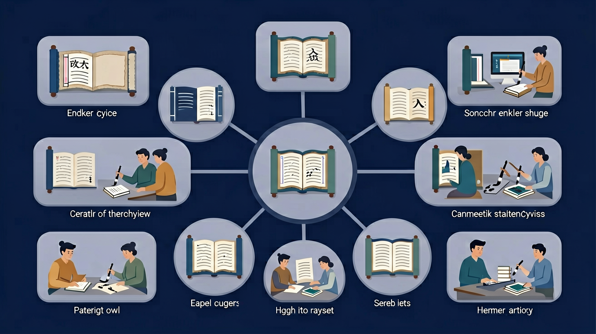

🎯 能说出联系上下文理解词义的3个步骤
🎯 能判断多义词在不同语境中的准确含义
🎯 能分析上下文中的关键词提示信息
❓ 为什么同一个词在不同句子里意思不一样？
❓ 老师总说联系上下文，到底怎么联系呢？
❓ 读不懂句子里的词怎么办？
学完这一课，这些问题你都能自信地回答。
预计用时 15 分钟 · 获得最多 10 ⭐

收集5个包含'打'字的句子（如'打篮球'、'打哈欠'），分析其不同含义
像侦探一样圈出句子中的关键词线索
上下文就像词语的朋友圈，能帮我们读懂它
对比词语在不同句子中的用法差异
用思维气泡图画出词语的关联信息
用这个方法读课外书时猜生词意思
先独立作答，再点选项查看对错与错因。
阅读超市促销海报'新鲜到货，欲购从速'，'速'在此处的意思是
日记中'妈妈用砂锅煲汤，满屋飘香'的'煲'指
公园指示牌'幼苗娇嫩，切勿攀折'中'折'的意思是
完成句子：天气预报说'午后有____天气'，结合后面'建议带伞'的提示，此处应填表示降雨的词语____。
答案：雷阵雨
伞具提示与降水相关，'雷阵'体现突发性
根据'奶奶戴着老花镜____报纸'的语境，横线处应填表示阅读动作的____字。
答案：看
眼镜与报纸构成典型阅读场景
✅ 画出前后3句的关键词
💡 孤立理解词语
✅ 用荧光笔标出语境提示词
💡 思维定式
给我一段含有难词的短文，让我用联系上下文的方法猜词义，你帮我判断对错并讲解方法。
📌 你可以把上面的内容复制给 AI 助手（如 DeepSeek、ChatGPT），开始互动练习！
回忆：今天学了哪些关键词和规则？试着说出来。
用自己的话解释今天学的核心概念，不看书能说清楚吗？
用今天的知识解决一个实际问题，或写一个新例子。
把今天的知识与已有知识联系起来：有什么共同点？有什么区别？能不能自己创造一道新题？